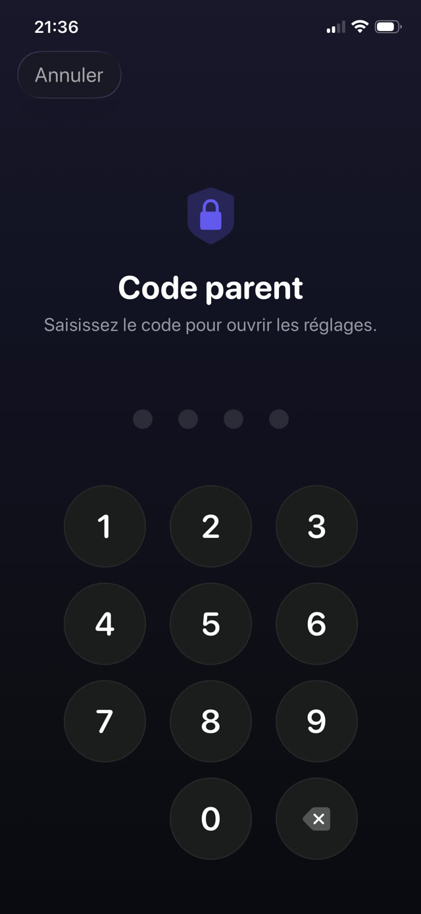

D'abord le réglage, ensuite les portes, ensuite comment les fermer.


La méthode intégrée : Temps d'écran d'Apple
Sur l'iPhone de l'enfant, ou depuis votre propre appareil si le téléphone est dans votre groupe de partage familial :
- Ouvrez Réglages et touchez Temps d'écran.
- Touchez Restrictions de contenu et de confidentialité et activez-les.
- Utilisez Limites d'apps pour plafonner des catégories ou des apps précises, et Temps d'arrêt pour les heures où seul ce que vous autorisez fonctionne.
- Définissez un code Temps d'écran différent du code de déverrouillage du téléphone, et évitez une date de naissance.
- Dans Restrictions de contenu et de confidentialité, bloquez les modifications du code et des réglages du compte.
Les failles que les enfants trouvent vraiment
Aucune ne demande de compétence technique. Toutes circulent dans la cour de récré :
- Supprimer et réinstaller. Une limite liée à une app précise se contourne en la retirant puis en la retéléchargeant, sauf si vous restreignez aussi l'installation d'apps.
- Le navigateur. Verrouiller l'app TikTok ou YouTube ne sert à rien si Safari ouvre le même site. Bloquez la catégorie ou restreignez aussi le contenu web.
- Changer l'heure. Modifier la date et l'heure de l'appareil peut perturber les limites, sauf si vous verrouillez les réglages de date et heure.
- Vous regarder taper. Le code s'apprend par-dessus l'épaule bien plus souvent qu'il ne se devine.
- « Demander plus de temps ». Si les validations sont à un geste sur votre téléphone, vous validerez distraitement, et la limite a disparu.
Le problème de fond des limites de temps
Même un réglage parfaitement étanche a un défaut de conception : quand le temps est écoulé, rien n'a changé sinon que votre enfant s'ennuie et vous en veut. Verrouiller crée un vide. Ce qui le remplit est soit une négociation, soit un contournement.
C'est pourquoi le réglage le plus durable ne se contente pas de verrouiller : il met quelque chose de l'autre côté du verrou. Les apps n'ont pas disparu ; elles sont derrière une tâche qui vaut la peine.
Verrouiller avec un but
Guardian Reader utilise en dessous le même système Temps d'écran d'Apple, donc le verrouillage est imposé au niveau du système, pas par une extension de navigateur ni un profil qu'on supprime d'un geste. La différence est dans ce qui le déverrouille.
Au lieu d'attendre la fin d'un minuteur, votre enfant scanne les pages d'un livre papier et les lit à voix haute, d'une traite. L'app vérifie la lecture face au texte scanné et libère les minutes que vous avez fixées. Quand ils sont épuisés, les apps se reverrouillent seules.
Le mettre en place
- Installez Guardian Reader sur l'iPhone de l'enfant et ouvrez-la.
- Autorisez l'accès à Temps d'écran quand c'est demandé ; c'est l'autorisation d'Apple elle-même.
- Choisissez les apps ou catégories à verrouiller : jeux, YouTube, TikTok, réseaux sociaux, ou tout.
- Définissez les pages par séance et les minutes gagnées.
- Créez un code parental. Il est distinct du code du téléphone et de Face ID, parce que le visage enregistré sur cet iPhone est celui de votre enfant.
Pourquoi le code n'est pas Face ID
Ce détail compte plus qu'il n'y paraît. Sur le téléphone d'un enfant, la biométrie est celle de l'enfant, donc tout « verrou parental » qui s'ouvre avec Face ID s'ouvre pour lui. Guardian Reader utilise volontairement un code que vous seul connaissez, avec blocage temporaire après plusieurs erreurs.
La lecture débloque l'écran.
Gratuit · Sans compte, sans suivi
Télécharger Guardian Reader pour iPhone